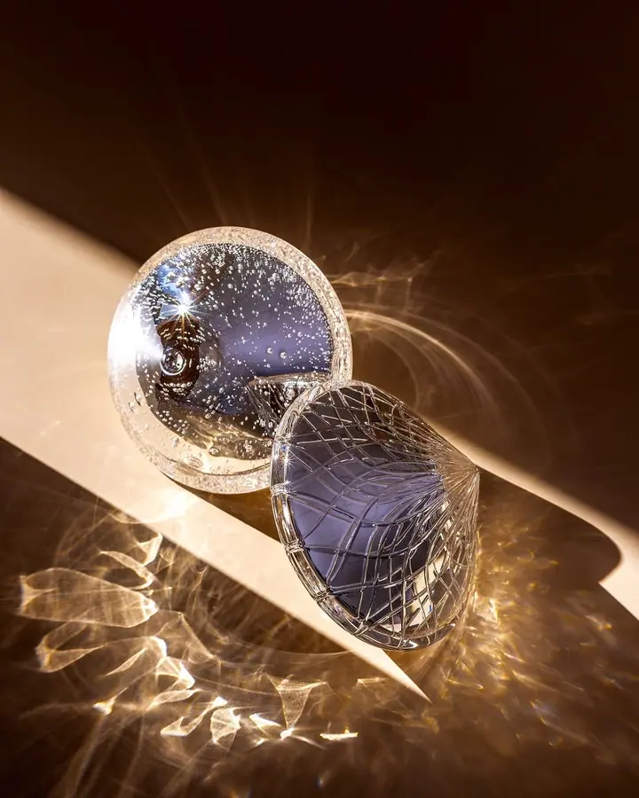
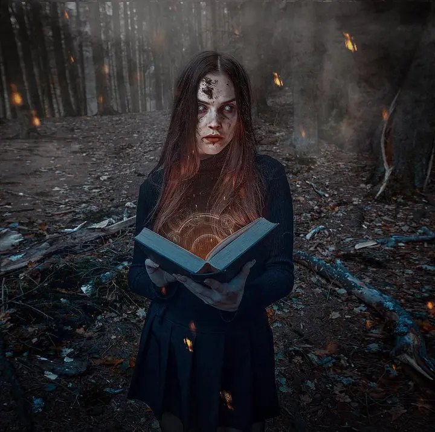
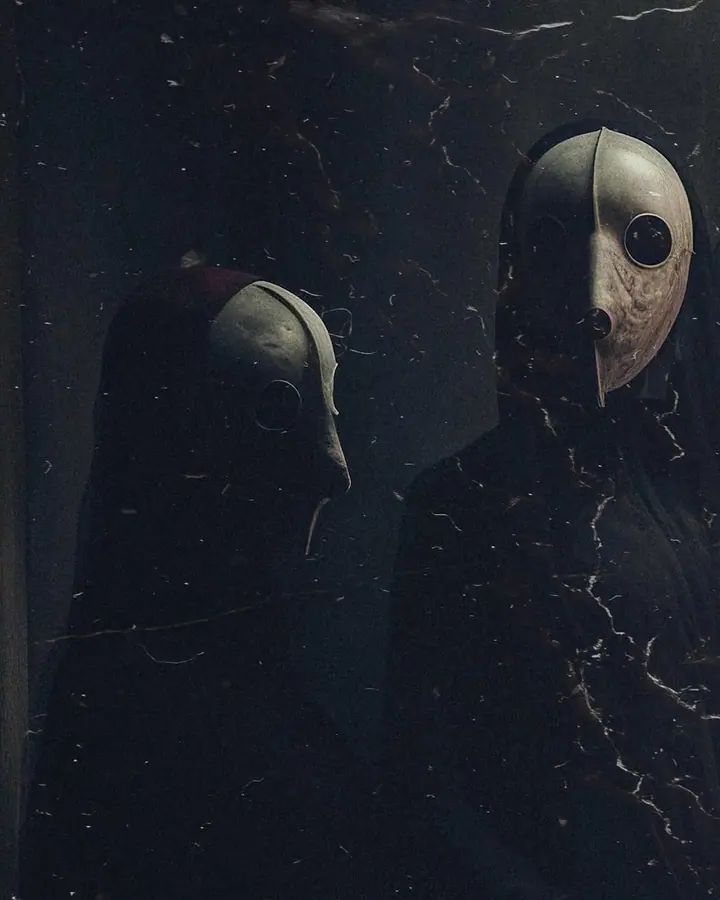
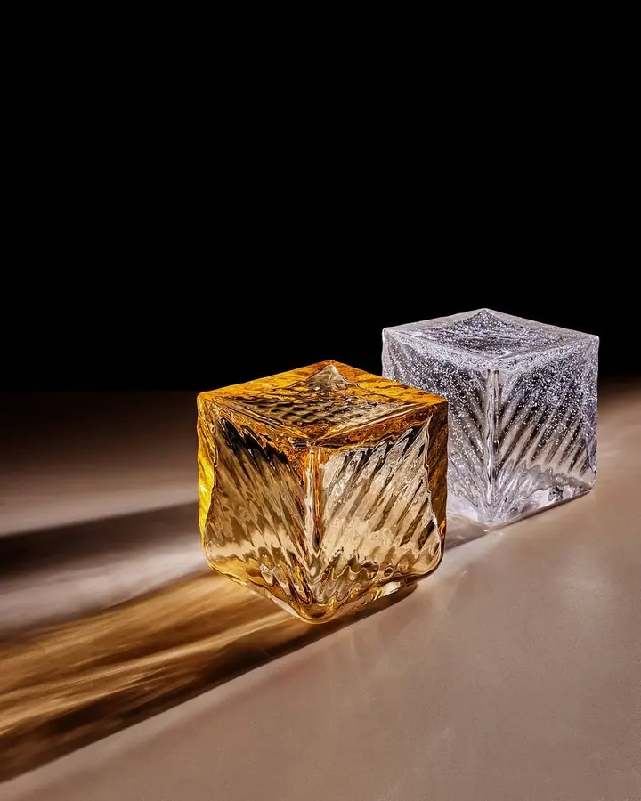
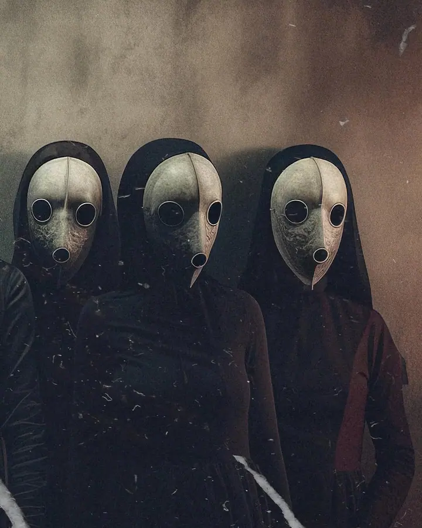
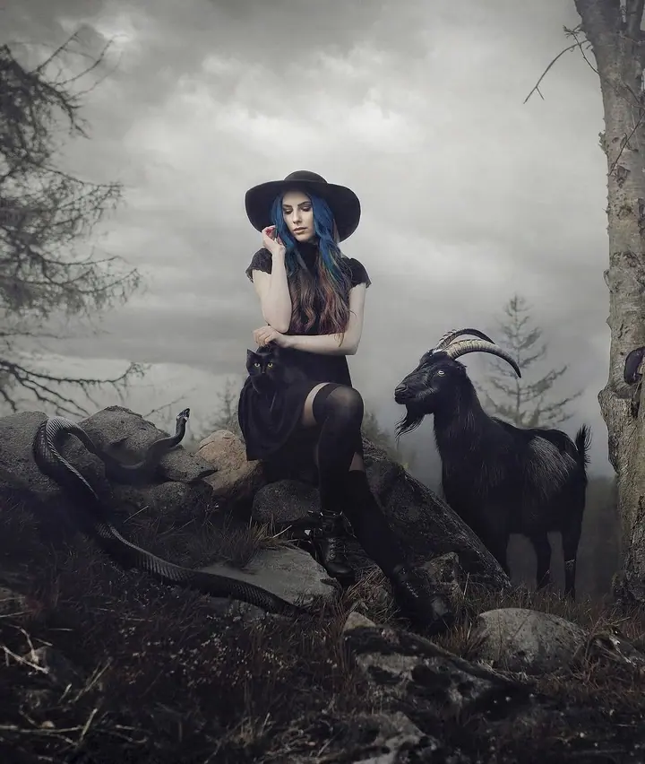
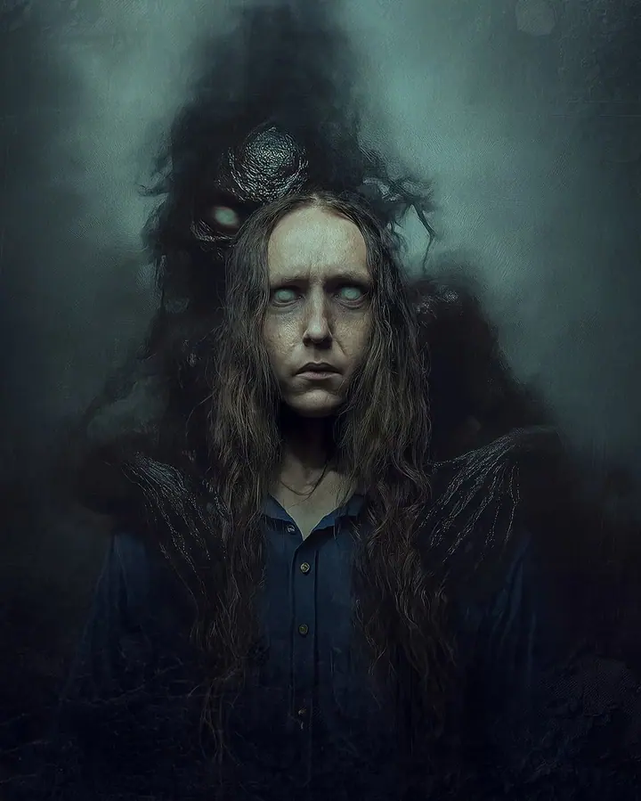
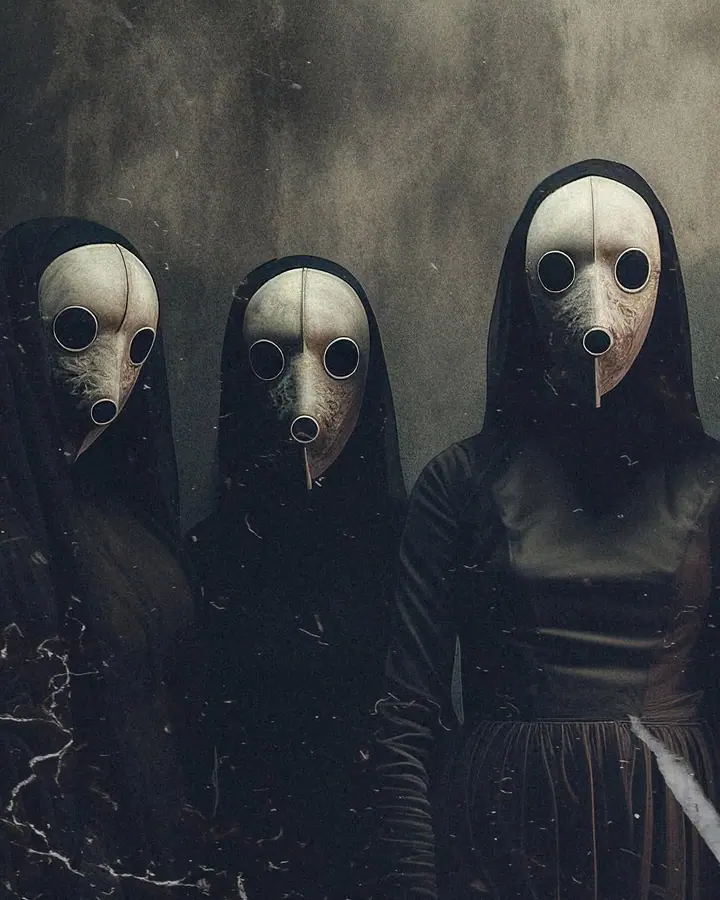
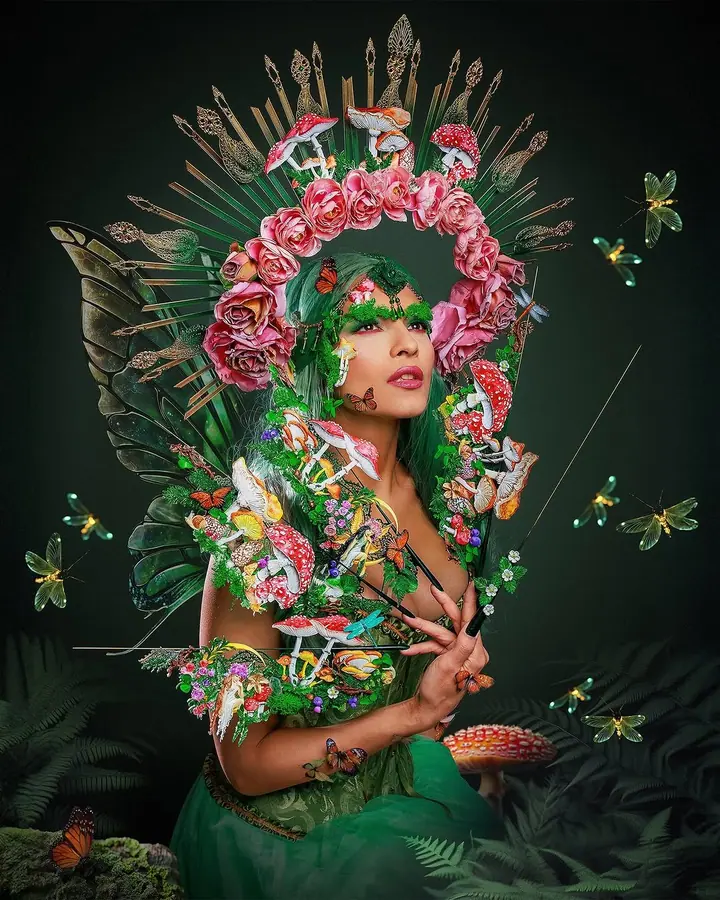

01 / 04
Produktová fotografie
Vizuály, které podporují prodej. Fotografie pro e-shopy, katalogy i reklamní kampaně s důrazem na detail, světlo a barevnou přesnost.
Zeptat se na termín→








Fotky, které mají tvář a smysl
Zeptat se na termín →(01) Ahoj
Jmenuji se Stanislav Kolinger Macháček a fotím produkty , značky a reklamu. Když nefotím pro klienty, fotím pro sebe, často v temnějších podtónech . Obojí mě vede k obrazu, který nevypadá jako z fotobanky .
989lidí sleduje mou práci na Instagramu
144příspěvků s fotkami a příběhy
(02) Co dělám
01 / 04
Vizuály, které podporují prodej. Fotografie pro e-shopy, katalogy i reklamní kampaně s důrazem na detail, světlo a barevnou přesnost.
Zeptat se na termín→02 / 04
Barevné korekce, úpravy, výřezy, fotomontáže i finální formáty pro web, tisk a kampaně. Každý detail přizpůsobím účelu použití.
Zeptat se na termín→Dále nabízím
(04) Postup
Od první zprávy po hotovou galerii.
Krok 1 z 4
Sedneme si, nebo se spojíme online, a probereme, co chcete vizuálně sdělit a kde se fotky budou používat.
Krok 2 z 4
Navrhnu směr, světlo a styl, který odpovídá produktu, značce i cílovému publiku. Termín potvrdíme zálohou.
Krok 3 z 4
Fotím a natáčím přesně podle zadání. Když je chuť zkoušet i jiné cesty, rád přidám i svůj pohled.
Krok 4 z 4
Fotky upravím a připravím ve formátech pro web, tisk i sociální sítě. Dodávám je zpravidla do 14 dnů od focení.
Když nefotím pro klienty, fotím pro sebe.
(05) Za objektivem
Fotím, natáčím, tvořím, upravuju a konzultuju. Spolupracuju především s firmami, značkami a agenturami, nejčastěji v oblasti produktové, lifestylové a reklamní fotografie. Fotografii a video beru jako dvě disciplíny, které se navzájem doplňují a dohromady dávají značce větší prostor.
Mám silné zázemí v grafice. Dlouhodobě navrhuji od konceptuální grafiky až po obaly desek a sazbu textů. Díky tomu přemýšlím nad obrazem v širším kontextu: jak funguje v layoutu, jak se snese s typografií a jak obstojí na webu, v tisku i v kampani. Pracoval jsem například pro Canvu, Preciosa Group, DMP nebo Novotný Glass.
Za dvacet let praxe jsem získal představu o tom, jaké řešení funguje a kdy je lepší vydat se jinudy. Prostor si nechávám i pro autorskou tvorbu: portréty, darkart a ambient. Věci, které nemusí prodávat, ale právě tam vzniká cit pro obraz, který pak přenáším i do komerčních zakázek.
Stanislav
Stanislav Kolinger Macháček · Produktový a konceptuální fotograf
Produktové, lifestylové nebo reklamní focení začíná na 2 000 Kč za hodinu práce, video pro sociální sítě také od 2 000 Kč za hodinu. Přesnou cenu stanovím na míru podle toho, co všechno má vzniknout.
Termín je závazný po odsouhlasení obou stran a zaplacení zálohy ve výši 50 % z ceny. Firemním klientům vystavuji fakturu se splatností 14 dní, nejsem plátce DPH.
Předávám jen finálně upravené snímky. Standardní úpravy jako barevné korekce, ořezy a základní retuš jsou v ceně, pokročilou retuš nebo fotomontáže domluvíme zvlášť.
Ano, nekomerční portrétní focení začíná na 1 000 Kč za fotku, minimálně 5 upravených snímků.
(07) Kontakt
Napište pár vět o tom, co si představujete, a termín, který se vám hodí.
foto.machaczek@gmail.com